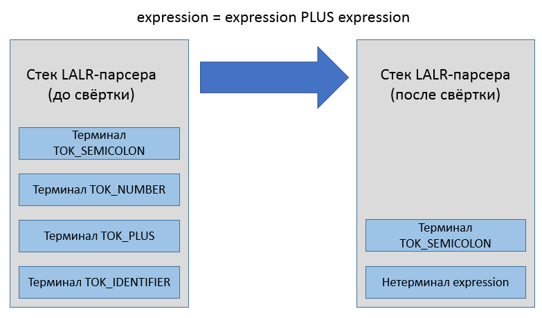
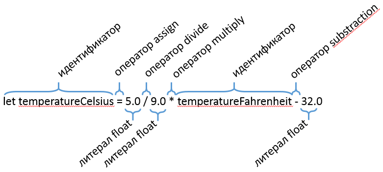
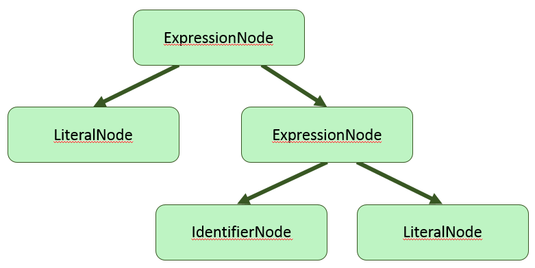

Lemon появился, когда разработчиков SQLite не устроил код, сгенерированный GNU Bison. Генератор парсеров Lemon создаёт более чистый и простой парсер, который лучше обрабатывает переполнение стека и другие исключительные случаи, более удобен в многопоточной и объектно-ориентированной средах.
Пример к статье доступен на github
Lemon — генератор синтаксических анализаторов (parser generator), разработанный автором СУБД SQLite (Dr. Richard Hipp), и доступный без лицензии как общественное достояние. Генераторы парсеров генерируют код автомата для восходящего разбора по принципу сдвига и свёртки (shift-reduce).
Ещё до появления Lemon использовались генераторы парсеров UNIX Yacc и GNU Bison. Они не устроили автора SQLite, и он написал в целом похожий на GNU Bison генератор парсеров, учитывая прошлые ошибки проектирования:
Lemon состоит из двух файлов в исходниках SQLite:
Эти файлы можно собрать в программу любым удобным способом для Windows, Linux или OSX.
Есть проект на github, предоставляющий готовый проект Visual Studio для lemon: github.com/deplinenoise/lemon-win32. Собранный lemon.exe нужно положить в каталог, добавленный в переменную окружения “PATH”, и просто начать использовать.
Синтаксис вызова lemon следующий:
lemon <опции> <входной файл *.y или *.lemon>
Список опций командной строки:
-c Не применять сжатие к таблице контекстных действий правил.
-D<string> Объявить макрос, используемый в директивах %ifdef.
-g Генерировать парсер грамматики без контекстных действий.
-m Генерировать файл, совместимый с makeheaders.
-l Не добавлять в код директивы #line.
-p Печатать конфликты, решённые автоматически за счёт приоритета операторов
-q (Тихий режим) не записывать файл отчёта Grammar.out
-b Печатать в отчёте (файл Grammar.out) только ключевую информацию.
-r Не сортировать и не менять номера состояний
-s Распечатать в консоль статистику сгенерированного парсера.
-x Распечатать версию утилиты.
-T<string> Указать свой файл-шаблон для генератора кода.
-f<string> Игнорируется. (Заготовка на будущее для опций компилятора '-f')
-I<string> Игнорируется. (Заготовка на будущее для опций компилятора '-I')
-O<string> Игнорируется. (Заготовка на будущее для опций компилятора '-O')
-W<string> Игнорируется. (Заготовка на будущее для опций компилятора '-W')
Подробнее об утилите makeheaders сказано здесь: hwaci.com/sw/mkhdr/.
Описание грамматики составляется в файле с расширением “.y” либо “.lemon”. Файл содержит список директив и правил грамматики, с помощью которых можно собрать дерево разбора либо абстрактное синтаксическое дерево, как только парсер получит извне последовательность токенов. Некоторые правила грамматики содержат императивные действия, заключённые в фигурные скобки:
// Разрешены однострочные комментарии в стиле C++
// Все директивы начинаются с символа %
%name ParseCalcGrammar
// Код в блоке директивы include попадёт в начало генерируемого файла "*.c"
%include {
#include "Token.h
#include "CalcParser.h"
#include <assert.h>
#include <math.h>
} // end %include
translation_unit ::= expression(A).
{
// В фигурных скобках находится императивный код,
// срабатывающий в момент свёртки символов по правилу
pParse->PrintResult(A.value);
}
Действия в фигурных скобках могут ссылаться на терминальные и нетерминальные символы, используя нотацию вида expression(A) для придания символу имени A, или любого другого имени. Когда правило грамматики однозначно распознаётся, оно “сворачивается”, а связанное действие выполняется. Если быть точным, исходный код действия копируется в сгенерированный код парсера, попадая внутрь какого-то блока кода внутри функции Parse, и получая доступ к именованным символам, терминальным и нетерминальным. Задача действия — прочитать значения ячеек стека, соответствующих символам в правой части правила, и заполнить ячейку стека, соответствующую конструируемому символу в левой части.

На первом шаге разбора формальных языков текст разбивается на лексические токены. Вы можете выполнять этот шаг любым удобным способом, и Lemon в этом не помощник — он всего лишь объявляет целочисленные идентификаторы токенов для каждого терминального символа, описанного в грамматике. Ядро сгенерированного парсера ожидает, что токены поступают один за другим последовательно, формируя виртуальный (либо реальный) поток токенов, которые и разбираются по грамматике.

Задача лексера/сканнера — создать поток токенов. Каждая категория токенов имеет свой идентификатор, такой как TOK_LEFT_PAREN, TOK_CLASS_KEYWORD и другие. Каждый токен имеет связанное с ним значение, дополняющее идентификатор токена. Примером служит, например, токен TOK_NUMBER со значением “1234”. Все токены используют один и тот же тип для хранения своих значений, и этот тип определён директивой %token_type (по умолчанию int). Дополнительная информация о токене может выглядеть так:
#pragma once
struct Token
{
// Позиция в исходном коде.
unsigned position;
// Числовое значение литерала (0 для остальных токенов).
double value;
};
Более низкоуровневое правило грамматики должно сворачиваться раньше, чем более высокоуровневое правило. То есть, с точки зрения деревьев разбора грамматики, листовые узлы создаются перед родительскими узлами. Поэтому действия правил должны придерживаться стратегии передачи значений из листовых узлов в родительские узлы. В процедурном стиле этого можно добиться, используя обобщённую структуру, представляющую узел дерева. Например, для простой грамматики калькулятора подойдёт такая структура:
struct Expression
{
double value; // числовое значение
int operationNo; // идентификатор операции +, -, *, / или %
Expression *pLeft; // необязательный левый дочерний узел
Expression *pRight; // необязательный правый дочерний узел
};
В объектно-ориентированном стиле принят паттерн, известный как Abstract Syntax Tree. Вместо универсальной структуры, описывающей узел разбора, используются конкретные классы, наследуемые от одного или нескольких базовых интерфейсов: IExpressionAst, IStatementAst, IDeclarationAst.
interface IExpression
{
double Evaluate(RuntimeEnvironment &env) = 0;
};
class BinaryOperationNode : public IExpression
{
public:
// в свойствах класса - информация об операторе и двух операндах,
// также имеющих тип IExpression
};
class LiteralNode : public IExpression
{
public:
// в свойствах класса - тип и значение литерала
};
class IdentifierNode : public IExpression
{
public:
// в свойствах класса - строковое имя и указатель на объект,
// на который ссылается идентификатор
};

Все типы токенов в Lemon получают целочисленные идентификаторы, представленные как набор макросов. Для управления генерацией имён макросов в lemon есть директива “token_prefix”. Директива “token_type” указывает строку, которая будет именем типа токена.
// All token codes are small integers with #defines that begin with "TK_"
%token_prefix TK_
// The type of the data attached to each token is Token. This is also the
// default type for non-terminals.
//
%token_type {Token}
%default_type {Token}
Предполагаем, что структура Token объявлена в “Token.h”:
#pragma once
struct Token
{
// position in source code.
unsigned position;
// token value (always 0 for most tokens).
double value;
};
// Для языка C заменяем 'struct Token' на простой 'Token'
typedef struct Token Token;
После генерации набор токенов выглядит следующим образом:
// Токен 0 зарезервирован под конец файла
// enum не используется по историческим причинам.
#define TK_PLUS 1
#define TK_MINUS 2
#define TK_STAR 3
#define TK_SLASH 4
#define TK_PERCENT 5
#define TK_LPAREN 6
#define TK_RPAREN 7
#define TK_NUMBER 8
Числовые значения токенов выбирает именно синтаксический анализатор, а не лексический. Дело в том, что для лексического анализатора токены — это выходные значения, и их изменение не меняет таблицу переходов в конечном автомате, который может быть внутри лексического анализатора. Для синтаксического анализатора токены становятся терминальными символами, и их числовые коды попадают в таблицу переходов парсера как входные сигналы автомата. Также в таблицу попадают числовые коды нетерминальных символов (объявленных в левой части правил грамматики).
Lemon генерирует код, который позволяет держать в памяти множество парсеров одновременно, и использовать их по мере поступления токенов. Эта особенность очень важна для СУБД SQLite, которая обрабатывает SQL-код из множества присоединившихся клиентов. Имена сгенерированных функций зависят от директивы “name”. Пример использования директивы:
// The name of the generated procedure that implements the parser
// is as follows:
%name ParseCalcGrammar
В данном случае процедурный интерфейс парсера будет выглядеть так:
void *ParseCalcGrammarAlloc(void *(*mallocProc)(size_t));
void ParseCalcGrammar(void*, int, Token);
void ParseCalcGrammarFree(
void *parser, /* The parser to be deleted */
void (*freeProc)(void*) /* Function used to reclaim memory */);
#ifndef NDEBUG
void ParseCalcGrammarTrace(FILE * TraceFILE, char * zTracePrompt);
#endif
Контекстные действия, добавленные к правилам грамматики, будут встроены в функцию ParseCalcGrammar вперемешку с генерируемым кодом парсера. Возникает вопрос — как из действий обратиться к остальным объектам программы, если в функции ParseCalcGrammar доступны лишь параметры этой функции? Для проброса внешнего контекста в функцию ParseCalcGrammar предназначена директива “extra_argument”, позволяющая избегать использования глобальных переменных (тем самым позволяя иметь множество объектов-парсеров, существующих и работающих совместно).
// The generated parser function takes a 4th argument as follows:
%extra_argument {ParserState *pState}
Теперь в контекстных действиях правил будет доступна переменная “pState”, а сигнатура функции ParseCalcGrammar изменится:
void ParseCalcGrammar(void*, int, Token, ParserState *);
В ООП принято привязывать методы к объекту. В языке C++ каждый метод к тому же получает неявный параметр this. В то же время lemon генерирует процедурный код на языке C89 (совместимый с C++). Превратить неудобный процедурный интерфейс в удобный объектно-ориентированный можно с помощью шаблона проектирования “Фасад”. Рассмотрим, как это сделать.
В первую очередь, следует заставить lemon выдать код на языке C++. Генератор lemon умеет генерировать только код на C89, но ничто не мешает просто переименовать файл из “.c” в “.cpp”. Сделать это можно с помощью Shell-скрипта для Linux/OSX либо аналогичного Bat-скрипта для Windows:
#!/usr/bin/env bash
# Опции командной строки lemon:
# -q (Quite) чтобы избежать вывода отчёта о генерации кода в CalcGrammar.out
# -l чтобы не добавлять директивы препроцессора #line при генерации кода
# -s чтобы написать краткую сводку о результатах генерации парсера
lemon -q -s -l CalcGrammar.lemon
rm -f CalcGrammar.cpp
mv CalcGrammar.c CalcGrammar.cpp
Интерфейс класса будет выглядеть следующим образом:
#pragma once
struct Token;
/// Фасад для созданного утилитой lemon парсера,
/// предоставляющий объектно-ориентированный интерфейс
class ICalcParser
{
public:
virtual ~ICalcParser() = default;
virtual bool Advance(int tokenId, Token const& tokenData) = 0;
#ifndef NDEBUG
virtual void StartDebugTrace(FILE *output) = 0;
#endif
};
Реализация будет содержать ещё несколько публичных методов, необходимых для внутренних целей парсера: из кода, сгенерированного lemon, мы можем обращаться к классу CCalcParser только через публичные методы. Чтобы передавать нужную информацию в CCalcParser, следует модифицировать грамматику:
// Сгенерированная функция продвижения состояния парсера будет принимать 4-й аргумент
%extra_argument {CCalcParser *pParse}
// Этот блок кода запускается при синтаксической ошибке.
%syntax_error {
(void)yymajor; // глушим предупреждения.
pParse->OnError(TOKEN); // переменная TOKEN имеет тип, указанный в директиве '%token_type'
}
// Этот блок кода запускается при переполнении стека LALR-парсера
%stack_overflow {
(void)yypMinor; // глушим предупреждения.
pParse->OnStackOverflow();
}
// Деструктор будет выполняться перед выбросом токена со стека,
// в данном случае мы просто глушим предупреждения.
%token_destructor {
(void)yypParser;
(void)yypminor;
(void)pParse;
}
translation_unit ::= expression(A).
{
// Печатаем результат выражения
pParse->PrintResult(A.value);
}
С учётом изменений в грамматике, реализация интерфейса ICalcParser будет выглядеть так:
#pragma once
#include "ICalcParser.h"
#include <string>
struct Token;
class CCalcParser : public ICalcParser
{
public:
CCalcParser();
~CCalcParser();
bool Advance(int tokenId, Token const& tokenData) final;
#ifndef NDEBUG
void StartDebugTrace(FILE *output) final;
#endif
void OnError(Token const& token);
void OnStackOverflow();
void PrintResult(double value);
private:
#ifndef NDEBUG
// Префиксом отладочных сообщений владеет C++ код,
// даже если префикс - пустая строка
std::string m_tracePrompt;
#endif
bool m_isErrorState = false;
void *m_parser = nullptr;
};
При создании фасада мы не будем трогать генерируемые файлы “CalcGrammar.h” и “CalcGrammar.cpp”. Чтобы использовать функции из “CalcGrammar.cpp”, достаточно сделать эквивалентные объявления функций и использовать их — реализации функций будут подставлены в на стадии компоновки. Это позволяет создать реализацию фасада парсера:
#include "CalcParser.h"
#include "Token.h"
#include <stdlib.h>
#include <new>
#include <iostream>
// pre-declaration of generated functions.
void *ParseCalcGrammarAlloc(void *(*mallocProc)(size_t));
void ParseCalcGrammar(void*, int, Token, CCalcParser*);
void ParseCalcGrammarFree(
void *p, /* The parser to be deleted */
void (*freeProc)(void*) /* Function used to reclaim memory */);
#ifndef NDEBUG
void ParseCalcGrammarTrace(FILE * TraceFILE, char * zTracePrompt);
#endif
CCalcParser::CCalcParser()
{
// Лямбда-функция allocate не захватывает переменных,
// и может быть преобразована в указатель на функцию
auto allocate = [](size_t size) -> void* {
return new (std::nothrow) char[size];
};
m_parser = ParseCalcGrammarAlloc(allocate);
}
CCalcParser::~CCalcParser()
{
// Лямбда-функция retain не захватывает переменных,
// и может быть преобразована в указатель на функцию
auto retain = [](void *pointer) -> void {
auto array = reinterpret_cast<char *>(pointer);
delete[] array;
};
ParseCalcGrammarFree(m_parser, retain);
}
bool CCalcParser::Advance(int tokenId, const Token &tokenData)
{
ParseCalcGrammar(m_parser, tokenId, tokenData, this);
return !m_isErrorState;
}
#ifndef NDEBUG
void CCalcParser::StartDebugTrace(FILE *output)
{
m_tracePrompt = "";
ParseCalcGrammarTrace(output, &m_tracePrompt[0]);
}
#endif
void CCalcParser::OnError(const Token &token)
{
std::cerr << "Syntax error at position " << token.position << std::endl;
m_isErrorState = true;
}
void CCalcParser::OnStackOverflow()
{
std::cerr << "LALR parser stack overflow occured." << std::endl;
m_isErrorState = true;
}
void CCalcParser::PrintResult(double value)
{
std::cerr << value << std::endl;
}